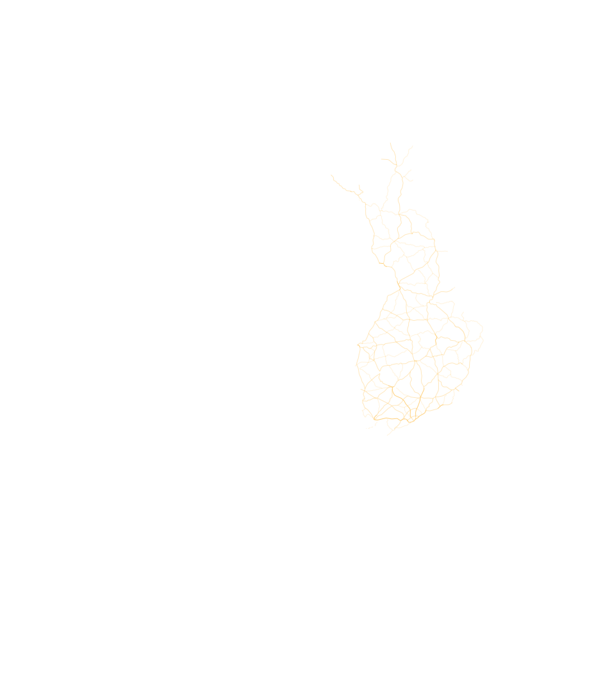
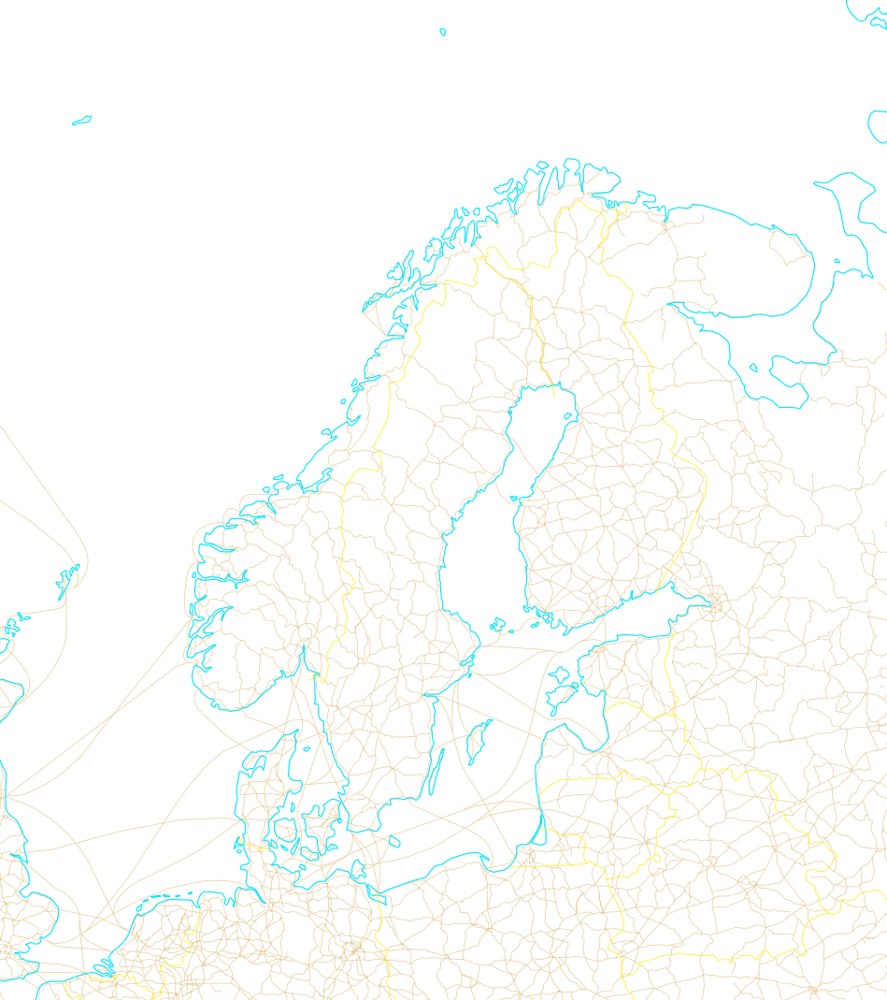

—
—
—
drag to scrub forecast time · ← / → keys step · toggle layers to compare
sun elevation contours (dark grey lines): 0° horizon · -6° civil ·
-12° nautical · -18° astronomical · shade deepens each band